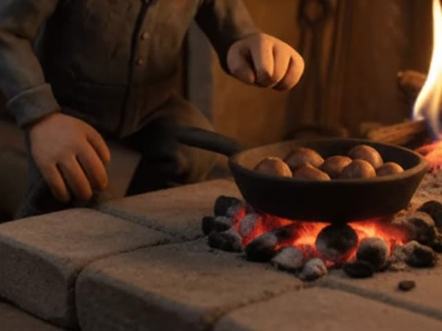

Sartén castañera con agujeros
La de toda la vida: los agujeros dejan que el fuego toque la castaña. Vale para gas y para la lumbre.
Verlo en AmazonVídeo a vídeo, lo que uso en la cocina pa cada receta. Nada de cacharros raros: lo justo pa que te salga como en el pueblo.
Entra en cada uno y verás el truco y los aperos que salen.

La de toda la vida: los agujeros dejan que el fuego toque la castaña. Vale para gas y para la lumbre.
Verlo en Amazon
Reparte el calor y no se agarra. En una olla fina, el membrillo se quema antes de cuajar.
Verlo en Amazon
El membrillo salpica y quema como el demonio. Con mango largo, la mano lejos.
Verlo en AmazonAlgunos enlaces son de afiliado: a ti te cuesta lo mismo y yo me llevo una pequeña comisión.

Cien recetas de pueblo, cada una con su truco, su refrán y alguna que otra trastada de Lucera.